Feel better through simple everyday habits.
Clear, practical wellness guidance for real life — helpful articles, free daily-use tools and premium resources for healthier routines.
Find what matters to you
 Daily Routines & Habits25 readsBones, Joints & Movement19 readsBrain & Mind18 readsImmunity & Lungs17 readsHeart & Circulation9 readsGut & Digestion11 readsSleep & Recovery7 readsKidney, Urinary & Hydration10 reads
Daily Routines & Habits25 readsBones, Joints & Movement19 readsBrain & Mind18 readsImmunity & Lungs17 readsHeart & Circulation9 readsGut & Digestion11 readsSleep & Recovery7 readsKidney, Urinary & Hydration10 reads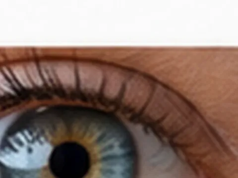
Eyes, Ears & Oral Care10 readsSkin, Hair & Beauty14 readsMetabolic Health4 readsFresh guides people are looking for
Original Daily Vitality explainers built around high-interest wellness questions.
Vitamin D vs. Vitamin D3: What’s the Difference?
A clear guide to vitamin D2 and D3, food sources, blood testing, supplement basics, and why more is not always better.
→Zinc: What It Does, Food Sources, and Supplement Cautions
Learn what zinc does, where to get it from food, common supplement mistakes, and why high doses can create new problems.
→Biotin for Hair, Skin, and Nails: What the Evidence Actually Says
Biotin is popular in beauty supplements, but deficiency is uncommon and evidence for routine high-dose hair, skin, or nail use is limited.
→Intrusive Thoughts: What They Are and When to Get Help
A calm, practical explanation of intrusive thoughts, why having a thought is not the same as wanting it, and when recurring thoughts may need professional support.
→Hair Loss: Common Causes, Shedding vs. Thinning, and When to See a Dermatologist
Hair loss has many causes. Learn the difference between shedding and progressive thinning, common triggers, and when a dermatologist can help.
→Latest Articles
Practical, easy-to-follow wellness guides.
Quick Online Mind Tests: What They Can — and Can’t — Tell You
What short brain scores mean and what they do not.
→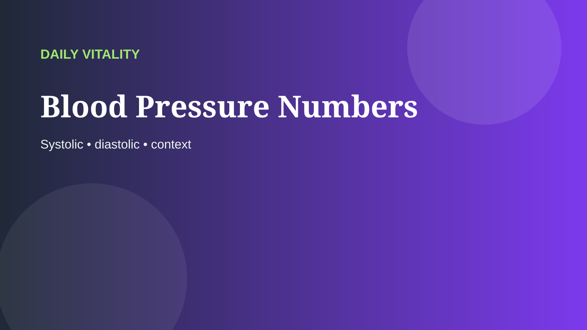
Understanding Blood Pressure Numbers
Systolic, diastolic and home-reading context.
→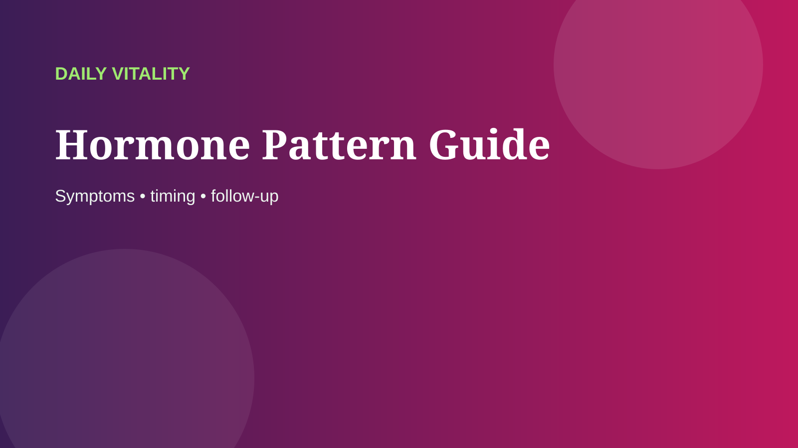
Hormone Imbalance Signs
Common overlapping symptoms and when to follow up.
→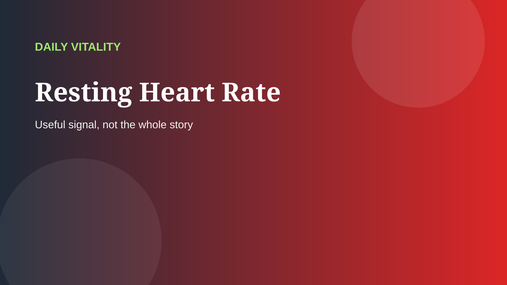
What Resting Heart Rate Can — and Can’t — Tell You
Why trends and symptoms matter.
→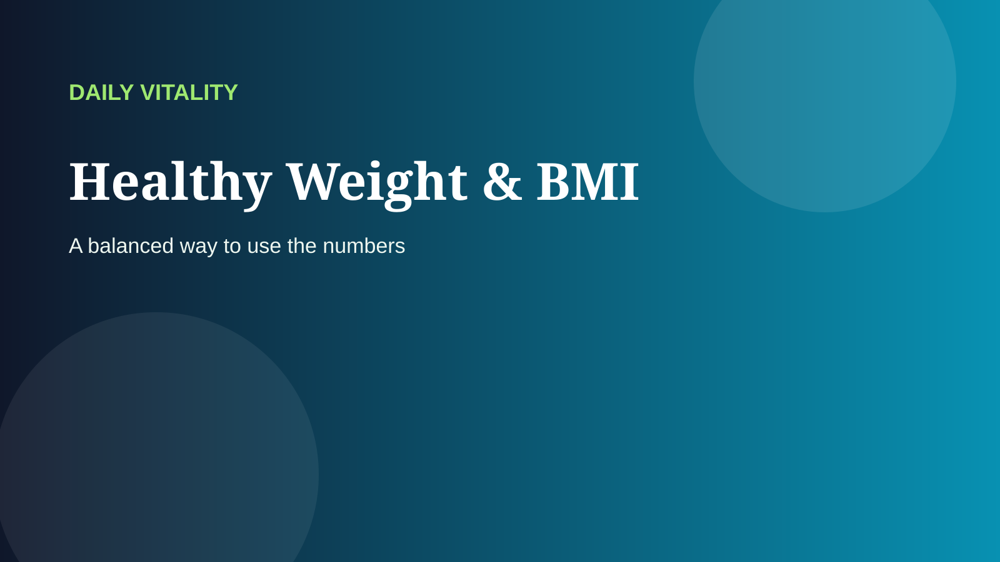
Healthy Weight, BMI, and Waist Size Explained
A more balanced way to use weight-health numbers.
→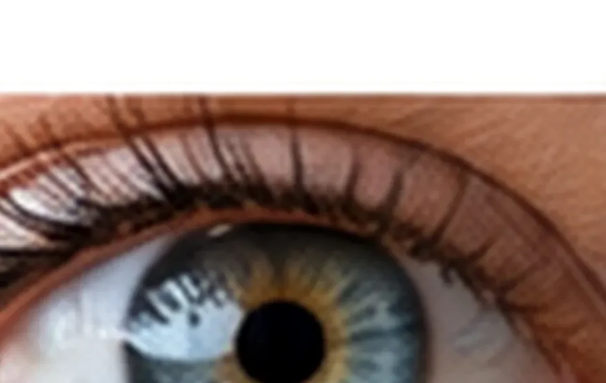
Online Color Vision Checks: What They Can — and Can’t — Tell You
How browser color-vision checks work, why screens can affect results, and when an eye-care professional should evaluate color vision.
→Online Hearing Checks: How to Use Them Safely
What an online hearing or speech check can show, what it cannot measure, and when to arrange a professional hearing test.
→
High Blood Pressure Warning Signs: The Silent Signals Most People Miss
High Blood Pressure Warning Signs: The Silent Signals Most People Miss — clear, practical wellness guidance with everyday tips, related tools and reads…
→How to Sleep Better at Night
How to Sleep Better at Night: a 4-step guide — Create a steady time anchor; Lower stimulation gradually; Build a calming sequence; Make the room work for you.
→How to Support Gut Health Every Day
How to Support Gut Health Every Day: a 4-step guide — Start with the simplest action; Make the routine practical; Support the habit with environment…
→How to Protect Your Eyes from Screens
How to Protect Your Eyes from Screens: a 4-step guide — Start with the simplest action; Make the routine practical; Support the habit with environment…
→How to Start Walking Every Day
How to Start Walking Every Day: a 4-step guide — Start small and safe; Focus on alignment and control; Add mobility or strengthening; Progress gradually.
→How to Manage Stress Step by Step
How to Manage Stress Step by Step: a 4-step guide — Notice the trigger or moment; Use a short grounding action; Reset your next decision; Build a…
→
5 Simple Ways to Boost Your Energy Naturally This Week
5 Simple Ways to Boost Your Energy Naturally This Week — clear, practical wellness guidance with everyday tips, related tools and reads from Daily Vitality.
→
Collagen: What It Actually Does and Do Supplements Work?
Collagen: What It Actually Does and Do Supplements Work — a plain-language guide to the basics, common myths, everyday habits that may help, and when to…
→
Bone Strength Blueprint
Bone Strength Blueprint — a plain-language guide to the basics, common myths, everyday habits that may help, and when to talk to a doctor.
→
Eczema and Psoriasis: What’s Actually Happening in Your Skin
Eczema and Psoriasis: What’s Actually Happening in Your Skin — a plain-language guide to the basics, common myths, everyday habits that may help, and when…
→Free Wellness Tools
All Daily Vitality tools in one moving library.
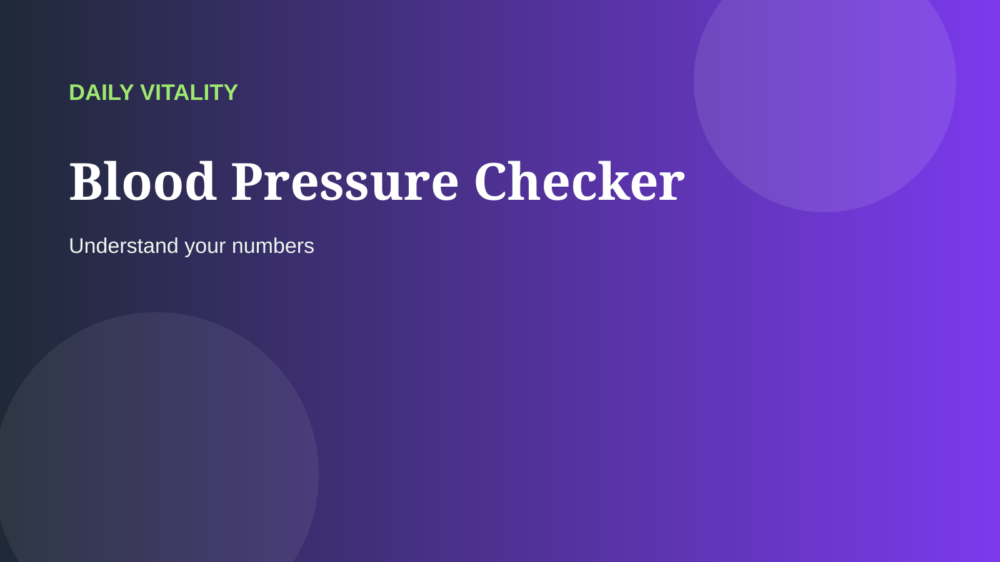
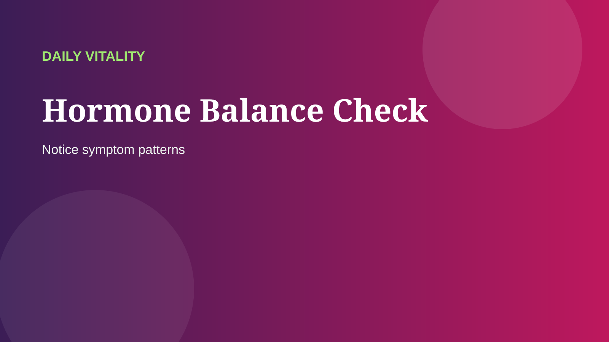
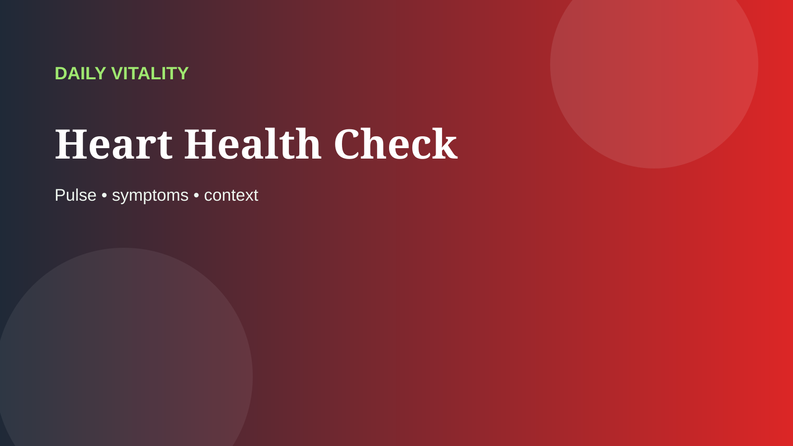
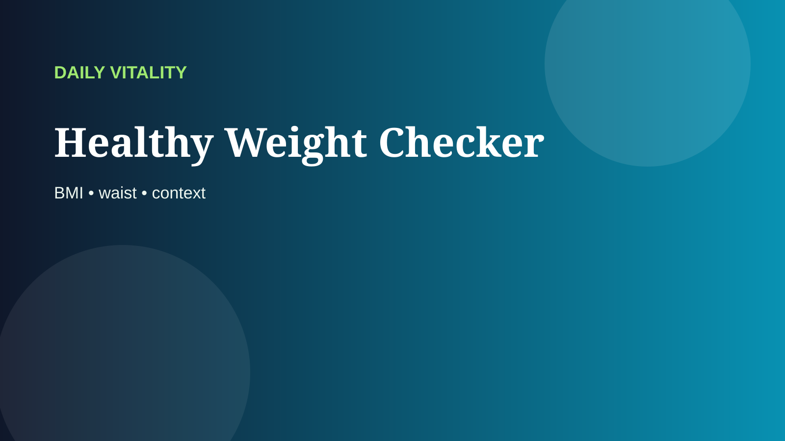
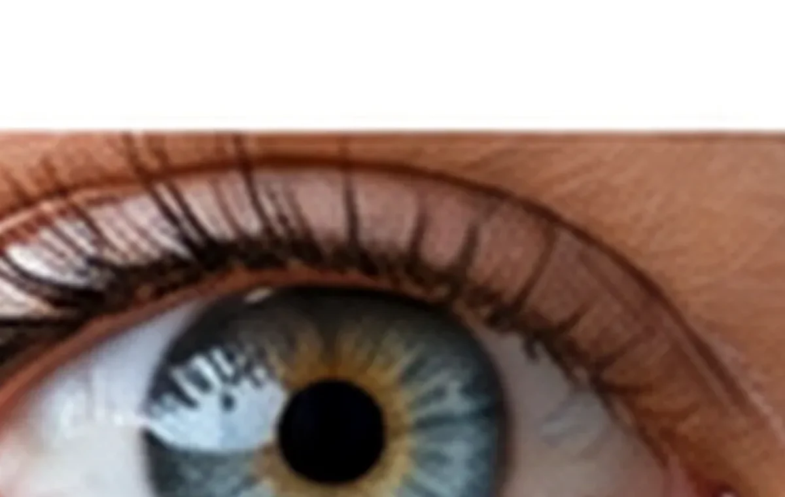
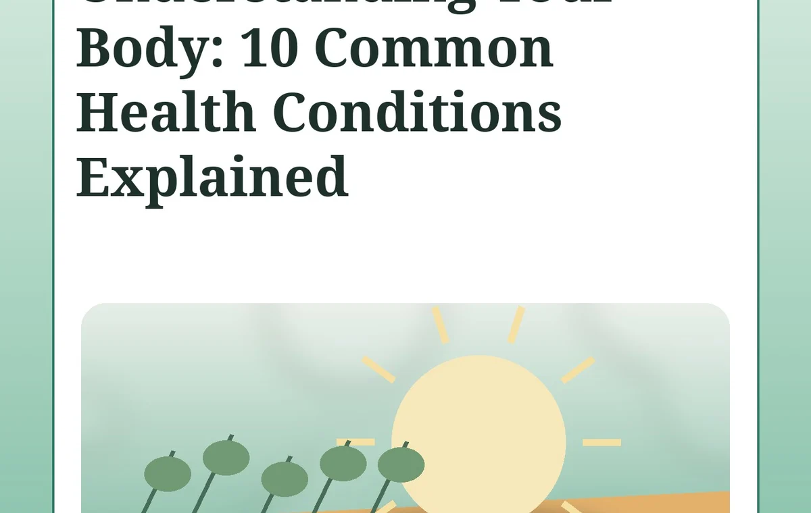


More useful reads
Colds vs. Flu: What’s the Actual Difference
Colds vs. Flu: What’s the Actual Difference — a plain-language guide to the basics, common myths, everyday habits that may help, and when to talk to a doctor.
→Cold Plunges and Ice Baths: What the Science Actually Says
Cold Plunges and Ice Baths: What the Science Actually Says — a plain-language guide to the basics, common myths, everyday habits that may help, and when…
→Creatine: Not Just for Athletes Anymore
Creatine: Not Just for Athletes Anymore — a plain-language guide to the basics, common myths, everyday habits that may help, and when to talk to a doctor.
→Cyclosporiasis Outbreak Guide
Cyclosporiasis Outbreak Guide — a plain-language guide to the basics, common myths, everyday habits that may help, and when to talk to a doctor.
→Why Dehydration Affects You More Than You Realize
Why Dehydration Affects You More Than You Realize — a plain-language guide to the basics, common myths, everyday habits that may help, and when to talk to…
→Digital Eye Strain: Why Screens Exhaust Your Eyes
Digital Eye Strain: Why Screens Exhaust Your Eyes — a plain-language guide to the basics, common myths, everyday habits that may help, and when to talk to…
→Ear Health Hearing
Ear Health Hearing — a plain-language guide to the basics, common myths, everyday habits that may help, and when to talk to a doctor.
→Ear Hearing Warning Signs
Ear Hearing Warning Signs — clear, practical wellness guidance with everyday tips, related tools and reads from Daily Vitality.
→
Simple Habits to Protect Your Eyesight
Simple Habits to Protect Your Eyesight — a plain-language guide to the basics, common myths, everyday habits that may help, and when to talk to a doctor.
→Eye Warning Signs
Eye Warning Signs — clear, practical wellness guidance with everyday tips, related tools and reads from Daily Vitality.
→Foodborne and Waterborne Illness: What Actually Makes You Sick
Foodborne and Waterborne Illness: What Actually Makes You Sick — a plain-language guide to the basics, common myths, everyday habits that may help, and…
→GLP-1 Weight-Loss Drugs Explained
GLP-1 Weight-Loss Drugs Explained — clear, practical wellness guidance with everyday tips, related tools and reads from Daily Vitality.
→Understanding Your Gut: A Simple Guide to Digestive Health
Understanding Your Gut: A Simple Guide to Digestive Health — a plain-language guide to the basics, common myths, everyday habits that may help, and when…
→Why Your Hair Gets Weak — And How to Support It
Why Your Hair Gets Weak — And How to Support It — clear, practical wellness guidance with everyday tips, related tools and reads from Daily Vitality.
→
Heart Attack Warning Signs: The Complete Guide
Heart Attack Warning Signs: The Complete Guide — clear, practical wellness guidance with everyday tips, related tools and reads from Daily Vitality.
→
Understanding Your Heart: A Simple Guide to Heart Health
Understanding Your Heart: A Simple Guide to Heart Health — a plain-language guide to the basics, common myths, everyday habits that may help, and when to…
→High-Fiber Foods: 25 Easy Ways to Increase Fiber
High-Fiber Foods: 25 Easy Ways to Increase Fiber — clear, practical wellness guidance with everyday tips, related tools and reads from Daily Vitality.
→High-Protein Breakfasts for Busy Mornings
High-Protein Breakfasts for Busy Mornings — a plain-language guide to the basics, common myths, everyday habits that may help, and when to talk to a doctor.
→
How Blood Works
How Blood Works — clear, practical wellness guidance with everyday tips, related tools and reads from Daily Vitality.
→How to Add More Color to Your Plate
How to Add More Color to Your Plate: choose one nutrition target, build around simple staples, make the better choice visible, review how it fits your day.
→Guides, eBooks & Products